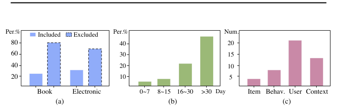
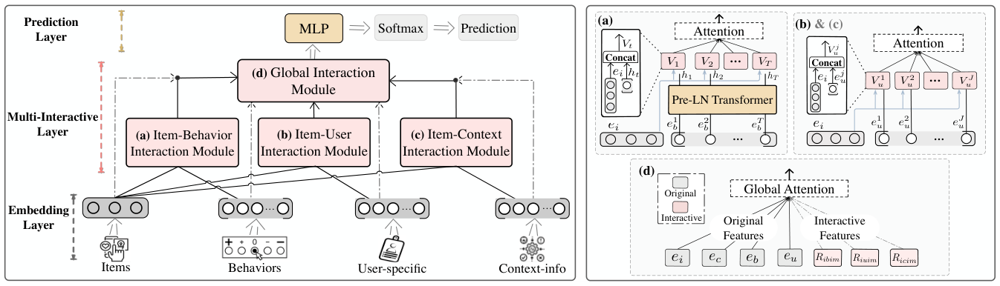

Multi-Interactive Attention Network for Fine-grained Feature Learning in CTR Prediction（面向细粒度特征学习的多交互注意力网络）
- 会议/期刊: WSDM 2021
- 作者与机构: Kai Zhang, Hao Qian, Qing Cui, Qi Liu 等，中国科学技术大学 + 蚂蚁集团
- 推荐链路定位: 精排（CTR 预估）
- 研究方向: CTR/CVR 预估与特征交叉 / 序列与会话推荐
- 论文原文: https://arxiv.org/abs/2012.06968v3
- 开源代码: DeepCTR-Torch（基线实现库，MIAN 本体未单独开源）
TL;DR (1分钟核心速览)
针对 DIN/DIEN 类序列模型"只看行为、不看属性"的三处失效（候选物品与历史行为无关、用户近期不活跃、行为表征在不同特征子空间下被压成单一向量），MIAN 用单个 Pre-LN Transformer 编码行为序列，并把候选物品分别与每一条用户属性字段、每一条上下文字段做局部注意力交互，最后由全局注意力权衡低阶原始特征与三路高阶交互表征。在 Amazon Book/Electro 与支付宝商业数据上 AUC 相对最优基线提升 0.61%/0.87%/0.37%，Logloss 下降 2.0%–7.3%，线上 10 天 A/B 的 CTR +0.41%、成本 -0.27%。
Background & Motivation (背景与核心矛盾)
- 主流范式: CTR 侧以 Wide&Deep / DCN / xDeepFM 做显式高阶交叉，序列侧以 DIN 的候选感知注意力和 DIEN 的 GRU 兴趣演化建模用户历史行为。
- 前人局限: ① DIN/DIEN 把所有非行为特征（画像、上下文）压成一个向量并联进 MLP，丢失了"机械键盘 ↔ 程序员职业"这类字段级关联；② 序列注意力假设候选物品与历史行为存在相关性，但电商中大量候选物品从未出现在用户历史里（图 3(a)），注意力在空集上退化为噪声；③ 用单一子空间表征历史行为，忽略了"T 恤"在夏天与冬天应被激活为不同表征。
- 核心洞察 (Key Insight): 真实系统中细粒度画像/上下文信息量远大于稀疏行为（图 3(c) 商业数据仅有 41 个物品但属性极多，且 >50% 行为发生在 30 天前），当行为缺失或过时时，字段级属性-候选交互是更可靠的兴趣证据。
- 本文切入点: 不做"行为 vs 属性"的二选一，而是并行构造三路局部交互 + 一路全局加权，让模型在行为充分时依赖 IBIM、在行为稀疏时自动转向 IUIM/ICIM。

Method (核心方法设计)
1. 整体框架 (Overall Architecture)
四组特征（候选物品 \(e_i\)、行为序列\(e_b=[e^1_b,\dots,e^T_b]\)、画像字段\(e_u=[e^1_u,\dots,e^J_u]\)、上下文字段\(e_c=[e^1_c,\dots,e^K_c]\)）经 Embedding 层投影后进入 Multi-Interactive Layer：IBIM 用 Pre-LN Transformer 得到每步隐状态再与候选物品拼接做注意力汇聚；IUIM/ICIM 把候选物品分别与每个画像/上下文字段拼接后逐字段打分加权；GIM 将 4 个原始表征与 3 个池化后的交互表征共 7 个向量做全局注意力重加权；最后 DNN + softmax 输出点击概率，交叉熵端到端训练。
flowchart TD
A["候选物品 / 行为序列 / 画像字段 / 上下文字段"] --> B["Embedding Layer"]
B --> C1["IBIM: Pre-LN Transformer + 候选感知注意力"]
B --> C2["IUIM: 逐画像字段注意力"]
B --> C3["ICIM: 逐上下文字段注意力"]
C1 --> D["GIM: 原始特征 vs 三路交互特征全局加权"]
C2 --> D
C3 --> D
D --> E["DNN + Softmax 输出 CTR"]
2. 关键设计拆解 (Key Designs)
- IBIM：Pre-LN Transformer + 逐步候选交互汇聚：RNN 难以并行且无法建模行为间长程依赖 \(\to\)将层归一化前置于多头自注意力与 FFN（Pre-LN）以稳定深层训练，再把每步隐状态与候选物品拼接后打分：\(\alpha_t=\frac{\exp(\tanh(V_t W_t+b_t))}{\sum_{t'}\exp(\tanh(V_{t'}W_t+b_t))}\)，其中\(V_t=[e_i;h_t]\)，输出\(R_{ibim}=\sum_{t}\alpha_t V_t\)。直觉：自注意力在\(h\) 个头上天然切出多个子空间表征，恰好回应"T 恤在不同季节被激活为不同向量"的需求。
- IUIM / ICIM：字段级细粒度交互：把画像/上下文从"一个拼接大向量"拆成 \(J\)/\(K\)个字段，逐个与候选物品拼接后单独打分：\(R_{iuim}=\sum_{j}\alpha_j V^j_u,\ \alpha_j=\mathrm{softmax}_j(\tanh([e_i;e^j_u]W^j_u+b^j_u))\)，ICIM 同理得\(R_{icim}\)。这不是把 concat 换个写法——它为每个字段保留独立的打分函数，使模型能显式判断"哪个属性与当前候选相关"，从而在行为为空时仍有可解释的兴趣证据。
- GIM 与训练目标：低阶原始特征与高阶交互特征的重要性不 fixed \(\to\)拼接\(r_g=[e_i;e_c;e_b;e_u;P(R_{ibim});P(R_{iuim});P(R_{icim})]\)（\(P\)为池化）后用全局注意力\(R_g=\sum_l \beta_l r_l,\ \beta_l=\mathrm{softmax}_l(\tanh(r_l W_l+b_l))\)加权。损失为常规交叉熵\(\mathcal{L}=-y\log\hat{y}-(1-y)\log(1-\hat{y})\)，无显式负采样（CTR 用曝光日志天然构成负样本）。推理时仅多一个 Transformer block 与 3 组轻量注意力打分，单 epoch 耗时 3700s（DIN 3143s、DIEN 4073s），介于两者之间。
Experimental Setup & Evaluation Protocol (实验设置与评估协议)
- 数据集与预处理: 过滤掉历史行为过少的用户与物品以缓解稀疏（论文未给出具体阈值，属复现风险点）。
| 数据集 | #Users | #Items | #Interactions | 特征/场景说明 |
|---|---|---|---|---|
| Amazon Book | 603,668 | 367,982 | 8,900,038 | 评论按 log time 排序作行为序列，含丰富文本元数据 |
| Amazon Electro | 192,403 | 63,001 | 1,689,188 | 同上，电子品类 |
| Commercial (Alipay) | 2,163,147 | 41 | 36,096,332 | 30 天点击日志，41 类候选物品，画像/上下文字段极多 |
- 数据划分与防穿越: Amazon 采用
Leave-Last-Out（前 \(T-1\)次行为预测第\(T\) 次是否发生）；商业数据为全局时间戳切分（前 29 天行为 → 预测第 30 天是否点击），严格无穿越。 - 排名评测协议: 非排序评测，采用 CTR 领域标准的逐曝光二分类指标 AUC 与 Logloss（未做 Full-Ranking，也未报告 GAUC/采样负例比）。
- 对比基线与超参: LR / Wide&Deep / DCN / DeepFM / xDeepFM / DIN / DIEN 共 7 个基线，均基于 DeepCTR-Torch 按原文调参复现。MIAN 用 Adam（lr=0.001, \(\beta_1\)=0.9,\(\beta_2\)=0.999），序列长度 30，MLP 维度 32/8，Transformer 头数 8，batch 128，dropout 0.2，\(l_2\)=0.001，截断正态初始化 std=0.02。
Key Experimental Results (实验关键数据)
1. 主实验对比 (Main Results)
| 模型 | Book AUC | Book Logloss | Electro AUC | Electro Logloss | Commercial AUC | Commercial Logloss |
|---|---|---|---|---|---|---|
| LR | 0.7876 | 0.4401 | 0.8214 | 0.2116 | 0.7584 | 0.3334 |
| Wide&Deep | 0.7932 | 0.4228 | 0.8385 | 0.2033 | 0.7611 | 0.3299 |
| DCN | 0.7995 | 0.4236 | 0.8540 | 0.1824 | 0.7646 | 0.3197 |
| DeepFM | 0.8067 | 0.4188 | 0.8636 | 0.1708 | 0.7609 | 0.3297 |
| xDeepFM | 0.8089 | 0.4174 | 0.8683 | 0.1662 | 0.7610 | 0.3301 |
| DIN | 0.8145 | 0.4113 | 0.8807 | 0.1273 | 0.7612 | 0.3205 |
| DIEN | 0.8159 | 0.4100 | 0.8836 | 0.1225 | 0.7634 | 0.3151 |
| MIAN | 0.8209 | 0.4018 | 0.8913 | 0.1136 | 0.7674 | 0.3097 |
| Improv. | +0.61% | -2.0% | +0.87% | -7.3% | +0.37% | -1.7% |
2. 消融实验 (Ablation Study)
| 变体 | Book AUC | Book Logloss | Electro AUC | Electro Logloss |
|---|---|---|---|---|
| MIAN (full) | 0.8209 | 0.4018 | 0.8913 | 0.1136 |
| w/o IBIM | 0.8154 | 0.4104 | 0.8843 | 0.1214 |
| w/o IUIM | 0.8187 | 0.4066 | 0.8875 | 0.1197 |
| w/o ICIM | 0.8194 | 0.4058 | 0.8902 | 0.1141 |
| w/o GIM | 0.8189 | 0.4060 | 0.8872 | 0.1186 |
| w/o IUIM & ICIM | 0.8166 | 0.4079 | 0.8846 | 0.1220 |
| DIEN（最优基线） | 0.8159 | 0.4100 | 0.8836 | 0.1225 |
3. 关键实验发现 (Key Findings)
- 序列内子空间编码是主增益来源：去掉 IBIM 使 Book AUC 从 0.8209 掉到 0.8154（-0.55pt），是所有单模块移除中损失最大的，甚至超过同时移除 IUIM+ICIM 的 -0.43pt；即便如此，"w/o IUIM&ICIM" 仍达 0.8166 > DIEN 0.8159，说明 Pre-LN Transformer 本身对行为的表征就优于 GRU + 候选注意力。
- 细粒度属性在行为稀疏场景补位最明显：Electro 上 w/o IUIM 使 AUC 下滑 0.38pt 且 Logloss 从 0.1136 恶化到 0.1197（-5.4%），远超 Book 上同设置的 0.22pt；而商业数据集（仅 41 个物品、行为稀疏）中 MIAN 相对 DCN 取得 +0.37% AUC，与"行为不足时属性接管"的动机一致。
- Pre-LN 是效率与效果双赢的工程细节：商业数据上 Pre-LN 相比原版 Transformer AUC 0.7674 vs 0.7662、Logloss 0.3097 vs 0.3103，且收敛曲线更平滑；训练耗时 3700s/epoch 低于 DIEN 的 4073s（GRU 难以并行），高于 DIN 的 3143s。线上 10 天 A/B 相对 DCN 稳定取得 CTR +0.41%、成本 -0.27%。
Highlights & Limitations (亮点、对比与审稿批判)
- 与代表作对比 (vs. Prior Work): 与 DCN/xDeepFM 相比，MIAN 多了完整的序列建模通路；与 DIN/DIEN 相比，核心差异不是换序列编码器，而是把画像与上下文从"一个大向量"拆成字段级集合并逐条与候选物品交互——这正是 DIEN 之后被后续 Fi-GNN/AutoInt 一类工作继承的思路。
- 可迁移亮点: ① 逐字段注意力打分器（\(O(J+K)\) 个轻量 MLP）可低成本嵌入任何 CTR 模型的特征侧；② GIM 显式对"原始低阶 vs 各交互模块高阶"做加权而非直接 concat，天然具备线上 bad-case 归因能力（图 6 的可视化即为此用途）。
- 审稿级局限批判: ① 序列长度硬截断为 30，而论文自述 >50% 行为发生在 30 天前，却未引入时间间隔 embedding，时效性痛点其实并未被真正解决；② 评测仅有 AUC/Logloss，无 Full-Ranking、无 GAUC、无多次运行的方差与显著性检验（线上仅称 "statistically significant"），且正文把商业集提升误写为 "3.7% of AUC"，与表格 0.37% 矛盾；③ GIM 的注意力只作用于 7 个向量，且三路局部模块参数随字段数线性膨胀，在字段数百级的真实系统中在线延迟需重新评估。
Rating (四维评分)
- 方法创新性 (Novelty): ⭐⭐⭐ （把"逐字段注意力交互 + 序列 Transformer + 全局加权"组合得干净有效，但每个组件单独看均非首创，属系统性工程创新）
- 评估协议与实验扎实度 (Protocol & Experiments): ⭐⭐⭐⭐ （三数据集 + 真实线上 A/B + 完整消融与效率对比，但缺显著性检验与排序类指标，数据过滤阈值未披露）
- 写作与数学规范度 (Clarity & Rigor): ⭐⭐⭐ （公式与符号定义清晰、图示充分，但商业集提升数字前后矛盾，且多处公式排版存在 OCR 级噪声）
- 工业落地与复现价值 (Industrial & Practical Value): ⭐⭐⭐⭐ （蚂蚁真实系统部署验证、开源基线库可直接复现、开销介于 DIN 与 DIEN 之间，迁移成本低）